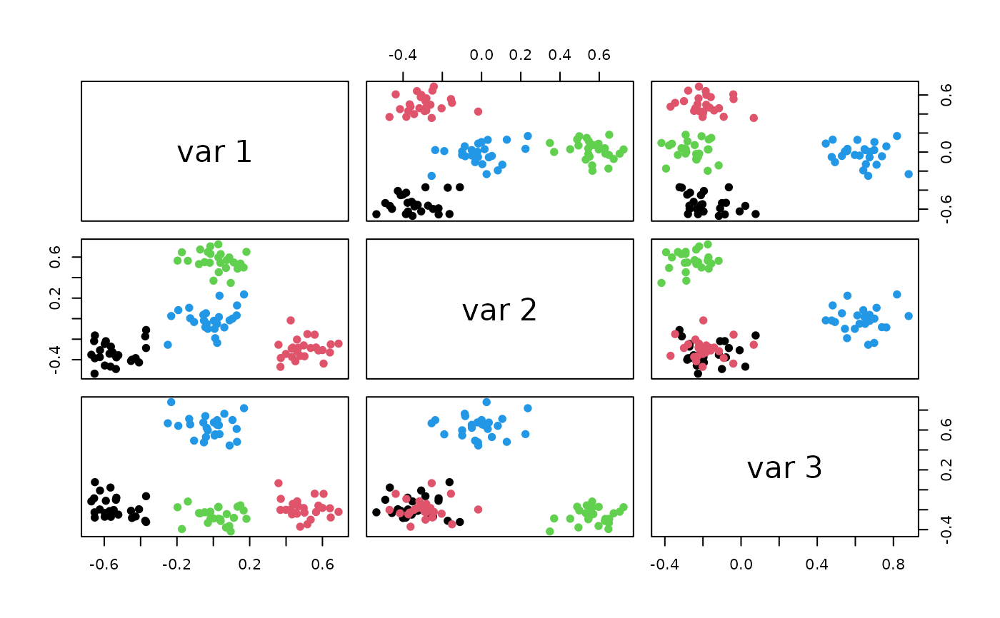

Simplex Classification Task Generator
Source:R/TaskGeneratorSimplex.R
mlr_task_generators_simplex.RdA TaskGenerator for the simplex task in mlbench::mlbench.simplex().
Note that the generator implemented in mlbench returns fewer samples than requested.
Dictionary
This TaskGenerator can be instantiated via the dictionary mlr_task_generators or with the associated sugar function tgen():
mlr_task_generators$get("simplex")
tgen("simplex")Parameters
| Id | Type | Default | Range | Levels |
| center | logical | TRUE | - | TRUE, FALSE |
| d | integer | 3 | \([1, \infty)\) | - |
| sd | numeric | 0.1 | \([0, \infty)\) | - |
| sides | integer | 1 | \([1, \infty)\) | - |
See also
as.data.table(mlr_task_generators)for a table of available TaskGenerators in the running session (depending on the loaded packages).Extension packages for additional task types:
mlr3proba for probabilistic supervised regression and survival analysis.
mlr3cluster for unsupervised clustering.
Other TaskGenerator:
TaskGenerator,
mlr_task_generators_2dnormals,
mlr_task_generators_cassini,
mlr_task_generators_circle,
mlr_task_generators_friedman1,
mlr_task_generators_moons,
mlr_task_generators_smiley,
mlr_task_generators_spirals,
mlr_task_generators_xor,
mlr_task_generators
Super class
mlr3::TaskGenerator -> TaskGeneratorSimplex
Examples
generator = tgen("simplex")
plot(generator, n = 200)

task = generator$generate(200)
str(task$data())
#> Classes ‘data.table’ and 'data.frame': 100 obs. of 4 variables:
#> $ y : Factor w/ 4 levels "A","B","C","D": 1 1 1 1 1 1 1 1 1 1 ...
#> $ x1: num -0.419 -0.54 -0.32 -0.646 -0.687 ...
#> $ x2: num 0.0159 -0.423 -0.2558 -0.2757 -0.3722 ...
#> $ x3: num -0.1183 -0.0417 -0.2003 -0.1438 -0.1975 ...
#> - attr(*, ".internal.selfref")=<externalptr>